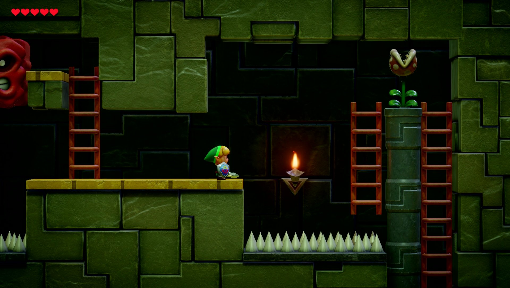

DECOUVREZ UN NOUVEL UNIVERS
Link explore alors une série de donjons dans le but de retrouver ces instruments, et affronte toute une
panoplie d'ennemis et résout de nombreuses énigmes. Durant ses recherches, il visite le temple du sud où
il découvre un marbre ancien comportant des peintures, qui détaillent la réalité de l'île : elle serait un
monde de rêve entièrement créé par le Poisson-rêve. Après cette révélation, la chouette convainc Link qu'il
ne s'agit que des rumeurs et que seul le Poisson-rêve connait la vérité. Après avoir réuni chaque instrument
des huit donjons disséminés sur l'île de Cocolint, Link se rend sur le mont Tamaranch et joue la balade du
Poisson-rêve, ce qui casse la coquille et lui permet de rentrer dans l’œuf. Link est alors confronté à son
dernier ennemi, Maléficio, une ombre noire capable de se matérialiser sous la forme des pires cauchemars de
son ennemi. Maléficio est en fait le responsable de l'endormissement du Poisson-rêve et de la création de ce
monde étrange. Il prend alors notamment la forme d'Agahnim et de Ganon, des boss et antagonistes rencontrés
dans les précédents épisodes de la série. Après sa défaite, le hibou révèle être une partie de l'esprit du
Poisson-rêve et dévoile que tout Cocolint n'est qu'un rêve. Link joue alors la balade du Poisson-rêve à
nouveau, ce qui réveille le Poisson-rêve. L'île de Cocolint et ses habitants amis ou ennemis disparaissent
petit à petit et Link se réveille alors étendu sur les débris de bois de son bateau flottant au milieu de
l'océan, alors qu'il distingue la silhouette du Poisson-rêve volant au-dessus de lui.

Decouvrez des paysages et ennemis diversifiers
